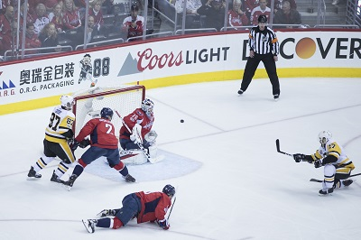

ПРИВЕТ УЧАСТНИКАМ СОРЕВНОВАНИЙ! |
Виды спорта: |
ХОККЕЙХокке́й (англ. hockey) — семейство игр на ледовой, тартановой, пластиковой, деревянной или травяной площадке, в котором две команды стараются поразить (мячом или шайбой) цель — ворота противника, используя клюшки. В каждой команде есть вратарь (иногда два вратаря, второй — запасной), который защищает ворота своей команды, и несколько полевых игроков. Существует много видов хоккея, такие как хоккей с шайбой, хоккей с мячом, хоккей на траве и другие. В большинстве стран мира термин «хоккей» без уточнений относится к хоккею на траве, в то время как в США, Канаде, России и большинстве стран Восточной и Северной Европы этот термин обычно относится к хоккею с шайбой. В частности, во Всероссийский реестр видов спорта хоккей с шайбой включён под названием «хоккей», без уточнений. Игры с изогнутыми палками и мячом можно найти в истории многих культур. В Египте обнаружена 4000-летняя резная работа, которая изображает команды с палками и снарядом. Хёрлинг в Ирландии датируется до 1272 года до н. э. Примерно 600 года до н. э. датируется древнегреческое изображение игры, которая, возможно, называлась керетизеин (κερητεειν), потому что в неё играли с рогом или похожей на рог палкой керас (kéras, κρρας). Во Внутренней Монголии дауры играет в бейкоу[en], игру, похожую на современный хоккей на траве, уже около 1000 лет. Большинство свидетельств хоккейных игр в Средние века можно найти в законодательстве, касающемся спорта и игр. Голуэйский Статут, принятый в Ирландии в 1527 году, запрещал некоторые виды игр с мячом, в том числе игры с использованием «крючковатых» (написанных «hockie», похожих на «hooky») палок. К XIX веку различные формы и виды исторических игр начали дифференцироваться и объединяться в отдельные виды спорта. Начали формироваться организации, занимающиеся кодификацией правил и положений, а также национальные и международные органы, которые управляют внутренней и международной конкуренцией. |
ГЛАВНОЕ НЕ ПОБЕДА, А УЧАСТИЕ! |
|